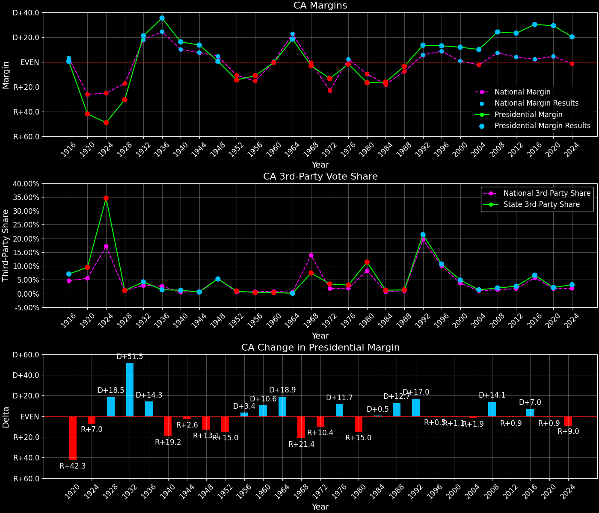
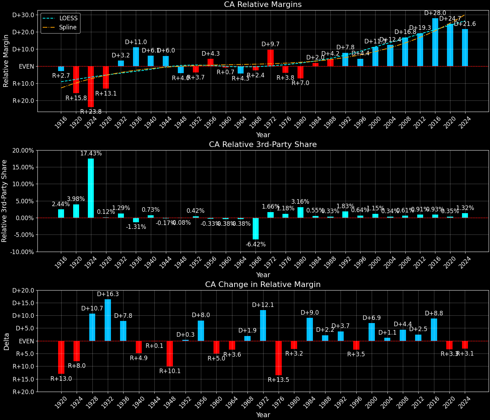
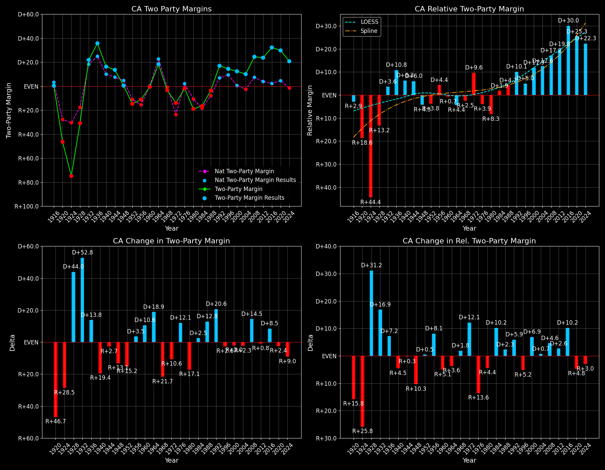

← Back to Map

Margins · 3rd-Party share · Pres. deltas

Relative margins · Relative 3rd-Party · Rel. deltas
California (CA) — Total Data
| Year | EVs | D | R | State Margin | Nat. Margin | Rel. Margin | Total votes |
|---|
| 1968 | 40 | 3,195,551(45.3%) | 3,379,776(47.9%) | R+2.6 | R+0.6 | R+2.0 | 7,056,699 |
| 1972 | 45 | 3,466,510(43.0%) | 4,590,286(57.0%) | R+13.9(Δ R+11.3) | R+23.5(Δ R+23.0) | D+9.6(Δ D+11.6) | 8,056,796 |
| 1976 | 45 | 3,721,672(49.1%) | 3,861,286(50.9%) | R+1.8(Δ D+12.1) | D+2.2(Δ D+25.7) | R+4.0(Δ R+13.6) | 7,582,958 |
| 1980 | 45 | 3,083,195(36.9%) | 4,523,474(54.2%) | R+17.3(Δ R+15.4) | R+9.9(Δ R+12.1) | R+7.4(Δ R+3.3) | 8,346,967 |
| 1984 | 47 | 3,922,495(41.8%) | 5,466,977(58.2%) | R+16.4(Δ D+0.8) | R+18.1(Δ R+8.2) | D+1.7(Δ D+9.0) | 9,389,472 |
| 1988 | 47 | 4,702,233(48.2%) | 5,054,917(51.8%) | R+3.6(Δ D+12.8) | R+7.7(Δ D+10.4) | D+4.1(Δ D+2.5) | 9,757,150 |
| 1992 | 54 | 5,111,203(46.0%) | 3,623,053(32.6%) | D+13.4(Δ D+17.0) | D+5.6(Δ D+13.3) | D+7.8(Δ D+3.7) | 11,106,550 |
| 1996 | 54 | 5,119,815(51.1%) | 3,828,368(38.2%) | D+12.9(Δ R+0.5) | D+8.6(Δ D+3.0) | D+4.3(Δ R+3.5) | 10,018,637 |
| 2000 | 54 | 5,860,562(53.4%) | 4,567,300(41.7%) | D+11.8(Δ R+1.1) | D+0.5(Δ R+8.0) | D+11.3(Δ D+6.9) | 10,965,042 |
| 2004 | 55 | 6,745,485(54.4%) | 5,509,826(44.4%) | D+10.0(Δ R+1.8) | R+2.5(Δ R+3.0) | D+12.4(Δ D+1.1) | 12,403,086 |
| 2008 | 55 | 8,274,473(61.1%) | 5,011,781(37.0%) | D+24.1(Δ D+14.1) | D+7.3(Δ D+9.7) | D+16.8(Δ D+4.4) | 13,541,664 |
| 2012 | 55 | 7,854,558(60.3%) | 4,839,956(37.2%) | D+23.2(Δ R+0.9) | D+3.9(Δ R+3.4) | D+19.3(Δ D+2.5) | 13,015,296 |
| 2016 | 55 | 8,752,489(62.3%) | 4,483,487(31.9%) | D+30.4(Δ D+7.2) | D+2.1(Δ R+1.8) | D+28.3(Δ D+9.0) | 14,059,192 |
| 2020 | 55 | 11,109,918(63.5%) | 6,006,098(34.3%) | D+29.2(Δ R+1.2) | D+4.4(Δ D+2.3) | D+24.7(Δ R+3.5) | 17,502,813 |
| 2024 | 54 | 9,276,179(58.5%) | 6,081,697(38.3%) | D+20.1(Δ R+9.0) | R+1.5(Δ R+6.0) | D+21.7(Δ R+3.0) | 15,865,475 |
Column explanations
- Δ
- Change (delta) in the value from the previous election year.
- Year
- Election year.
- EVs
- Number of electoral votes allocated to this state or unit.
- D
- Number of votes for the Democratic candidate (raw count(pct%)).
- R
- Number of votes for the Republican candidate (raw count(pct%)).
- State Margin
- Margin between the two major-party candidates, including third-party votes ((D - R)/total).
- Nat. Margin
- The national presidential margin for that year, including third-party votes ((D_total - R_total)/total_votes).
- Rel. Margin
- The presidential margin relative to the national presidential margin (Margin - Nat. Margin).
- Total votes
- Total voter turnout or ballots cast (when provided).
California (CA) — Third-Party Data
| Year | D | R | Other votes | State 3rd-Party Share | 3rd-Party Nat. Share | 3rd-Party Rel. Share |
|---|
| 1968 | 3,195,551(45.3%) | 3,379,776(47.9%) | 481,372(6.8%) | 6.82% | 13.59% | -6.76% |
| 1972 | 3,466,510(43.0%) | 4,590,286(57.0%) | 0(0.0%) | 0.00% | 0.09% | -0.09% |
| 1976 | 3,721,672(49.1%) | 3,861,286(50.9%) | 0(0.0%) | 0.00% | 0.33% | -0.33% |
| 1980 | 3,083,195(36.9%) | 4,523,474(54.2%) | 740,298(8.9%) | 8.87% | 6.98% | 1.89% |
| 1984 | 3,922,495(41.8%) | 5,466,977(58.2%) | 0(0.0%) | 0.00% | 0.12% | -0.12% |
| 1988 | 4,702,233(48.2%) | 5,054,917(51.8%) | 0(0.0%) | 0.00% | 0.21% | -0.21% |
| 1992 | 5,111,203(46.0%) | 3,623,053(32.6%) | 2,372,294(21.4%) | 21.36% | 19.23% | 2.13% |
| 1996 | 5,119,815(51.1%) | 3,828,368(38.2%) | 1,070,454(10.7%) | 10.68% | 9.68% | 1.01% |
| 2000 | 5,860,562(53.4%) | 4,567,300(41.7%) | 537,180(4.9%) | 4.90% | 3.65% | 1.25% |
| 2004 | 6,745,485(54.4%) | 5,509,826(44.4%) | 147,775(1.2%) | 1.19% | 0.84% | 0.36% |
| 2008 | 8,274,473(61.1%) | 5,011,781(37.0%) | 255,410(1.9%) | 1.89% | 1.38% | 0.51% |
| 2012 | 7,854,558(60.3%) | 4,839,956(37.2%) | 320,782(2.5%) | 2.46% | 1.62% | 0.84% |
| 2016 | 8,752,489(62.3%) | 4,483,487(31.9%) | 823,216(5.9%) | 5.86% | 5.54% | 0.32% |
| 2020 | 11,109,918(63.5%) | 6,006,098(34.3%) | 386,797(2.2%) | 2.21% | 1.84% | 0.37% |
| 2024 | 9,276,179(58.5%) | 6,081,697(38.3%) | 507,599(3.2%) | 3.20% | 1.88% | 1.32% |
Column explanations
- Year
- Election year.
- D
- Number of votes for the Democratic candidate (raw count(pct%)).
- R
- Number of votes for the Republican candidate (raw count(pct%)).
- Other votes
- Number of votes for third-party (other) candidates (raw count(pct%)).
- State 3rd-Party Share
- Share of the vote received by third-party (other) candidates.
- 3rd-Party Nat. Share
- The national third-party share for that year (3rd-Party votes / total votes).
- 3rd-Party Rel. Share
- Third-party share relative to the national third-party share (3rd-Party share - Nat. 3rd-Party share).

Two-party margins · relative · deltas
California (CA) — Two-Party Data
| Year | EVs | D | R | 2-Party Margin | 2-Party Nat. Margin | 2-Party Rel. Margin |
|---|
| 1968 | 40 | 3,195,551(48.6%) | 3,379,776(51.4%) | R+2.8 | R+0.7 | R+2.1 |
| 1972 | 45 | 3,466,510(43.0%) | 4,590,286(57.0%) | R+13.9(Δ R+11.1) | R+23.6(Δ R+22.9) | D+9.6(Δ D+11.7) |
| 1976 | 45 | 3,721,672(49.1%) | 3,861,286(50.9%) | R+1.8(Δ D+12.1) | D+2.2(Δ D+25.8) | R+4.0(Δ R+13.7) |
| 1980 | 45 | 3,083,195(40.5%) | 4,523,474(59.5%) | R+18.9(Δ R+17.1) | R+10.6(Δ R+12.8) | R+8.3(Δ R+4.2) |
| 1984 | 47 | 3,922,495(41.8%) | 5,466,977(58.2%) | R+16.4(Δ D+2.5) | R+18.1(Δ R+7.5) | D+1.7(Δ D+10.0) |
| 1988 | 47 | 4,702,233(48.2%) | 5,054,917(51.8%) | R+3.6(Δ D+12.8) | R+7.8(Δ D+10.4) | D+4.1(Δ D+2.5) |
| 1992 | 54 | 5,111,203(58.5%) | 3,623,053(41.5%) | D+17.0(Δ D+20.7) | D+6.9(Δ D+14.7) | D+10.1(Δ D+6.0) |
| 1996 | 54 | 5,119,815(57.2%) | 3,828,368(42.8%) | D+14.4(Δ R+2.6) | D+9.5(Δ D+2.6) | D+5.0(Δ R+5.2) |
| 2000 | 54 | 5,860,562(56.2%) | 4,567,300(43.8%) | D+12.4(Δ R+2.0) | D+0.5(Δ R+8.9) | D+11.9(Δ D+6.9) |
| 2004 | 55 | 6,745,485(55.0%) | 5,509,826(45.0%) | D+10.1(Δ R+2.3) | R+2.5(Δ R+3.0) | D+12.6(Δ D+0.7) |
| 2008 | 55 | 8,274,473(62.3%) | 5,011,781(37.7%) | D+24.6(Δ D+14.5) | D+7.4(Δ D+9.8) | D+17.2(Δ D+4.6) |
| 2012 | 55 | 7,854,558(61.9%) | 4,839,956(38.1%) | D+23.7(Δ R+0.8) | D+3.9(Δ R+3.4) | D+19.8(Δ D+2.6) |
| 2016 | 55 | 8,752,489(66.1%) | 4,483,487(33.9%) | D+32.3(Δ D+8.5) | D+2.2(Δ R+1.7) | D+30.0(Δ D+10.2) |
| 2020 | 55 | 11,109,918(64.9%) | 6,006,098(35.1%) | D+29.8(Δ R+2.4) | D+4.5(Δ D+2.3) | D+25.3(Δ R+4.7) |
| 2024 | 54 | 9,276,179(60.4%) | 6,081,697(39.6%) | D+20.8(Δ R+9.0) | R+1.6(Δ R+6.1) | D+22.4(Δ R+2.9) |
Column explanations
- Δ
- Change (delta) in the value from the previous election year.
- Year
- Election year.
- EVs
- Number of electoral votes allocated to this state or unit.
- D
- Number of votes for the Democratic candidate (raw count(pct%)).
- R
- Number of votes for the Republican candidate (raw count(pct%)).
- 2-Party Margin
- Margin between the two major-party candidates, ignoring third-party votes ((D - R)/(D + R)).
- 2-Party Nat. Margin
- The national presidential margin for that year, including third-party votes ((D_total - R_total)/total_votes).
- 2-Party Rel. Margin
- The presidential margin relative to the national presidential margin (Margin - Nat. Margin).